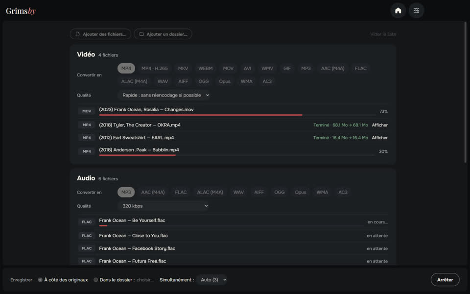
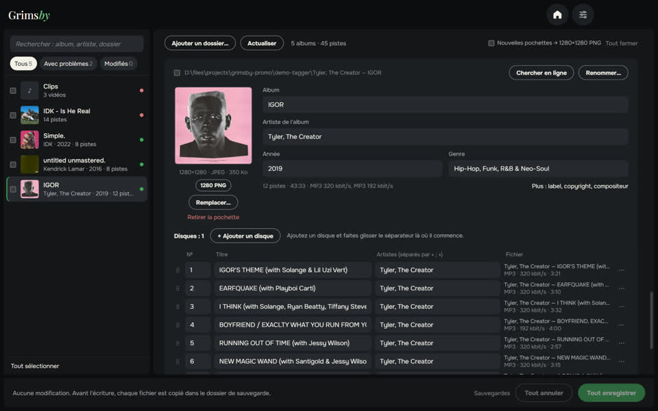
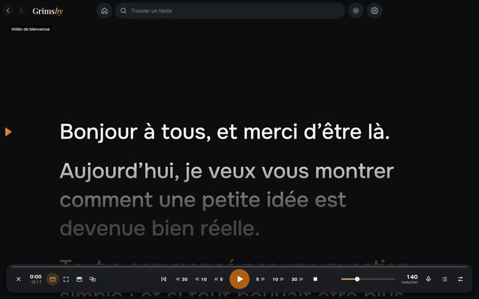
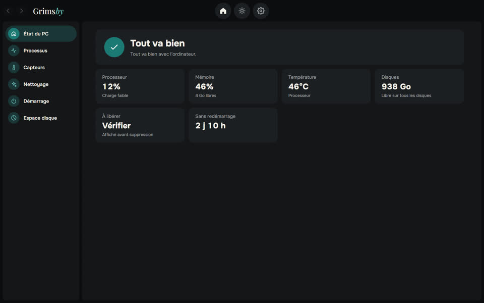

Cinq applications gratuites dans le même style : musique, fichiers, tags, téléprompteur et santé du PC. Sans compte, sans publicité.

Grimsby Player
Lecteur hors ligne pour votre musique et vos clips téléchargés
Un lecteur pour celles et ceux qui téléchargent et collectionnent la musique. Indiquez votre dossier de musique, et votre collection devient une bibliothèque digne d’un service de streaming : albums par année, pages d’artistes, clips à côté des albums. Tout reste sur votre ordinateur — sans compte, sans abonnement, sans publicité.
- Albums par année de sortie et pages d’artiste avec albums, clips, concerts et featurings
- Clips, concerts et films d’album associés automatiquement
- Lecture sans blanc, normalisation du volume et égaliseur 10 bandes
- Playlists radio intelligentes qui se composent toutes seules
- Statistiques d’écoute et de collection, statistiques d’album et bilan de l’année
- Convertisseur, recherche de doublons et bilan de santé de la bibliothèque intégrés

Grimsby Converter
Vidéo, audio, photos et documents convertis hors ligne
Un convertisseur de fichiers qui fonctionne directement sur votre ordinateur. Déposez fichiers et dossiers entiers en vrac : ils sont triés par groupes, chaque groupe a son format et sa qualité, et tout est converti d’un seul clic. Rien n’est envoyé nulle part.
- Vidéo, audio, photos, documents, tableurs et présentations dans une seule fenêtre
- Des dossiers entiers d’un coup, triés automatiquement par groupes
- Mode rapide : de MOV à MP4 en quelques secondes, sans perte de qualité
- Des dizaines de formats : de l’audio DSD et des livres audio M4B au PSD de Photoshop et à Keynote
- Les originaux restent intacts ; pas de limite de taille, pas de filigrane
- Plusieurs fichiers à la fois — autant que votre processeur le permet


Grimsby Tagger
Éditeur de tags par lots : albums, pochettes, noms de fichiers
Un éditeur de tags pour votre bibliothèque musicale qui travaille album par album, pas fichier par fichier. Indiquez un dossier : il regroupe les fichiers en albums, affiche chacun sous forme de carte avec sa pochette et signale ce qui cloche. Corrigez tout et enregistrez d’un seul clic.
- Les albums se rangent tout seuls : disques, éditions et fichiers isolés
- Problèmes bien visibles : champs vides, valeurs disparates, pochettes manquantes, encodage cassé
- Corrections en un clic à partir des noms de fichiers et de dossiers
- Trouvez l’album en ligne et associez ses titres à vos fichiers
- Renommez fichiers et dossiers selon un modèle, avec annulation
- Les vidéos aussi : MP4, MKV, MOV et plus — tags et pochettes, sans réencodage

Grimsby Prompter
Un téléprompteur simple qui suit votre voix
Un téléprompteur qui reste simple. Collez ou ouvrez votre texte, lancez et lisez : il défile en douceur à votre rythme ou suit votre voix, directement sur votre ordinateur. Vos textes restent chez vous — sans compte, sans publicité.
- Défilement fluide, vitesse réglable pendant la lecture
- Suivi de la voix en 9 langues, hors ligne après un seul téléchargement du modèle
- Retour ou avance par secondes ; modes par ligne, paragraphe et page
- Au-dessus de toutes les fenêtres, sur un second écran, en plein écran ou en miroir pour vitre
- Bibliothèque de textes avec dossiers ; ouvre txt, md, rtf, docx et pdf
- Polices, couleurs, ligne de lecture, styles prêts à l’emploi et raccourcis personnalisés

Grimsby Helper
L’état de votre PC en un coup d’œil : processus, températures, nettoyage
Un assistant qui veille sur votre PC. En un coup d’œil, vous voyez si tout va bien et quoi faire sinon : ce qui charge l’ordinateur, à quel point les composants chauffent et combien d’espace peut être libéré. Le nettoyage montre toujours d’abord ce qu’il a trouvé, et rien n’est supprimé tant que vous n’appuyez pas sur le bouton.
- Un avis simple sur l’écran d’accueil, avec les raisons et quoi faire
- Processus et graphiques : ce qui charge votre ordinateur en ce moment
- Températures, capteurs et santé des disques, historique conservé sur votre ordinateur
- Nettoyage des fichiers temporaires et du cache : tout voir d’abord, puis choisir
- Liste de démarrage et carte de ce qui occupe l’espace disque
- Icône dans la zone de notification avec alertes de surchauffe, de manque d’espace et de mémoire
